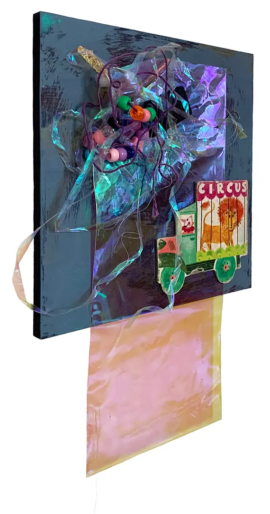
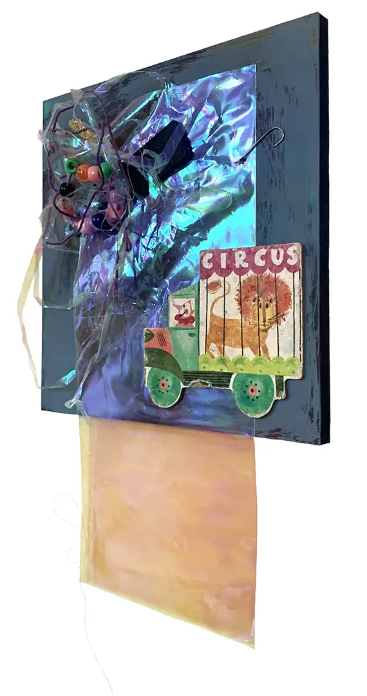
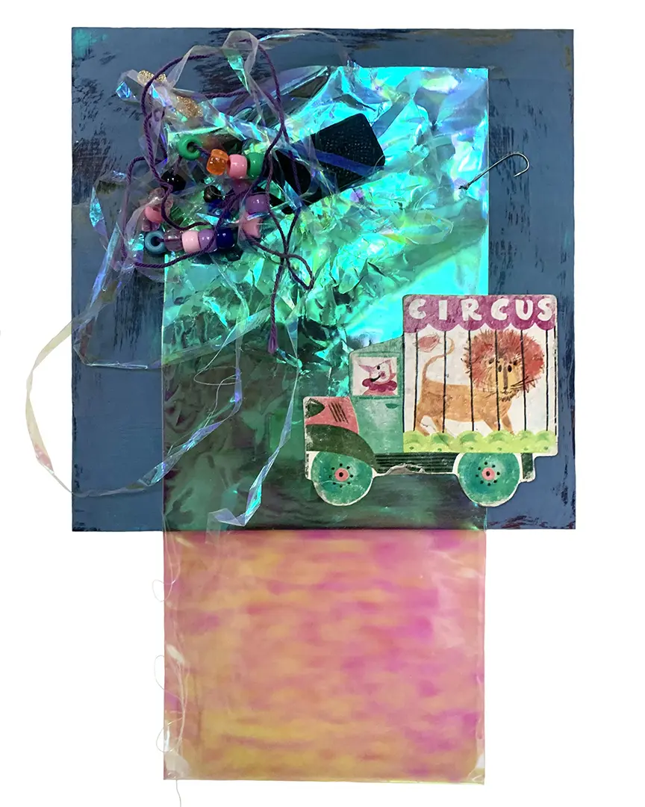
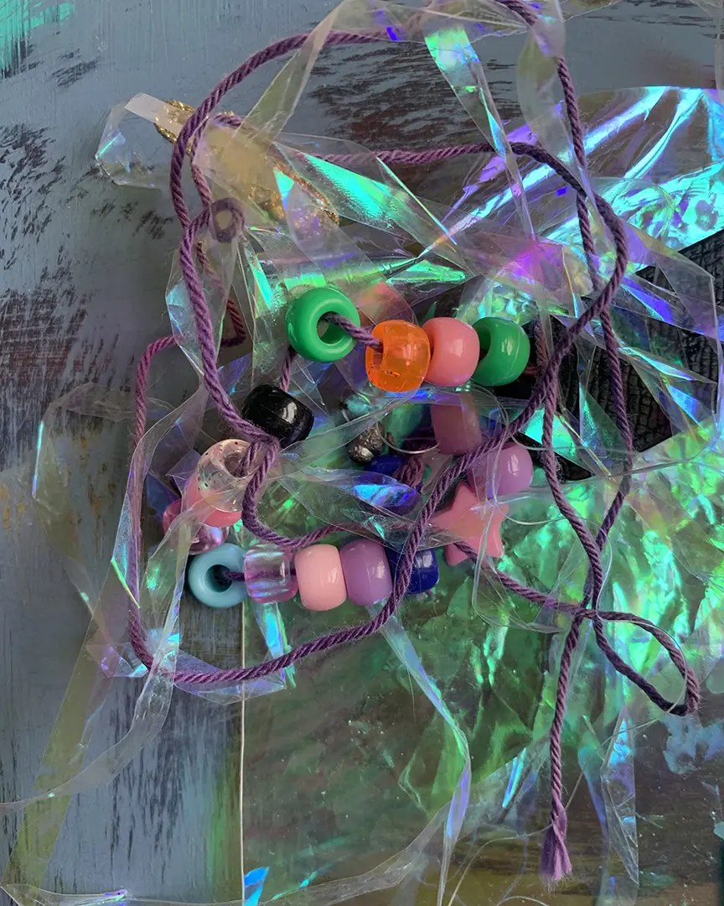
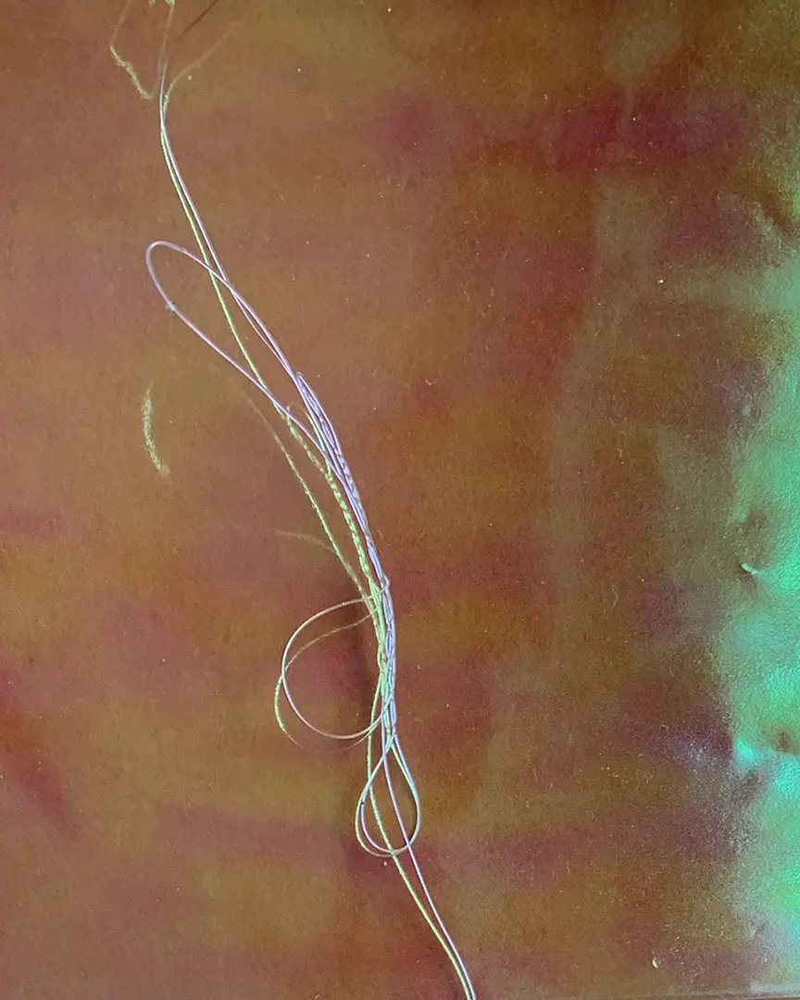

Collection 1
Glue some garbage on a board call that art





December 2021, Showed in Identity as Anonymity, July 2022
Glue some garbage on a board call that art





December 2021, Showed in Identity as Anonymity, July 2022